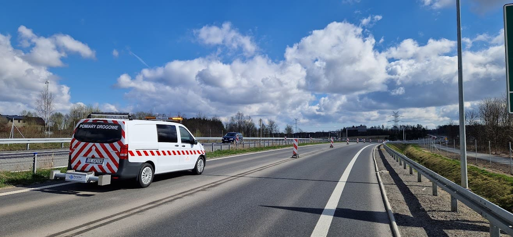
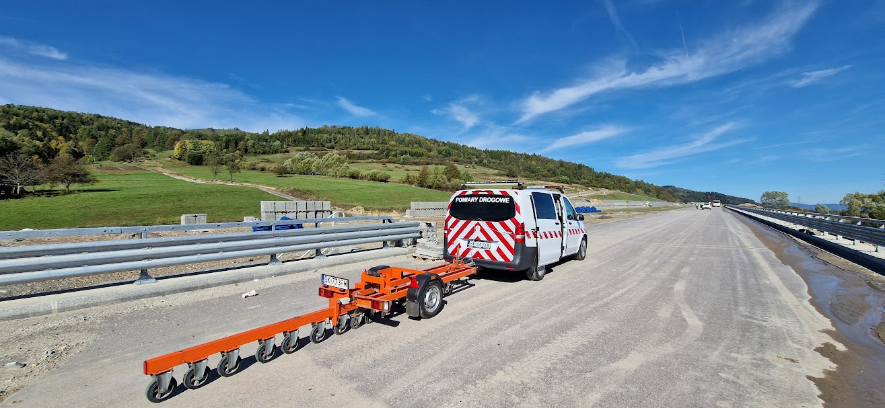
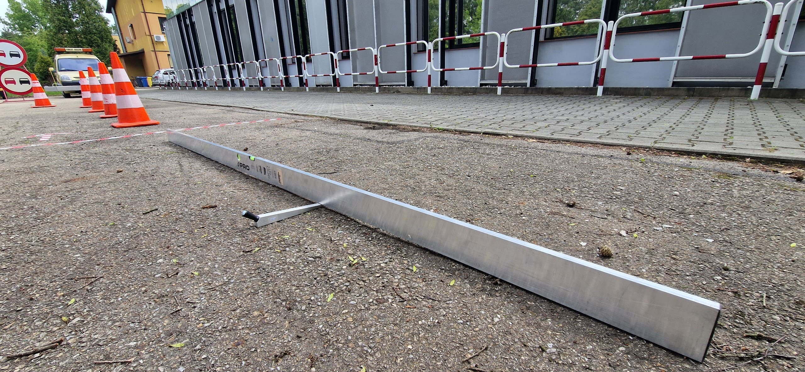
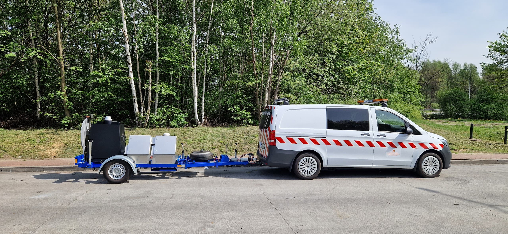
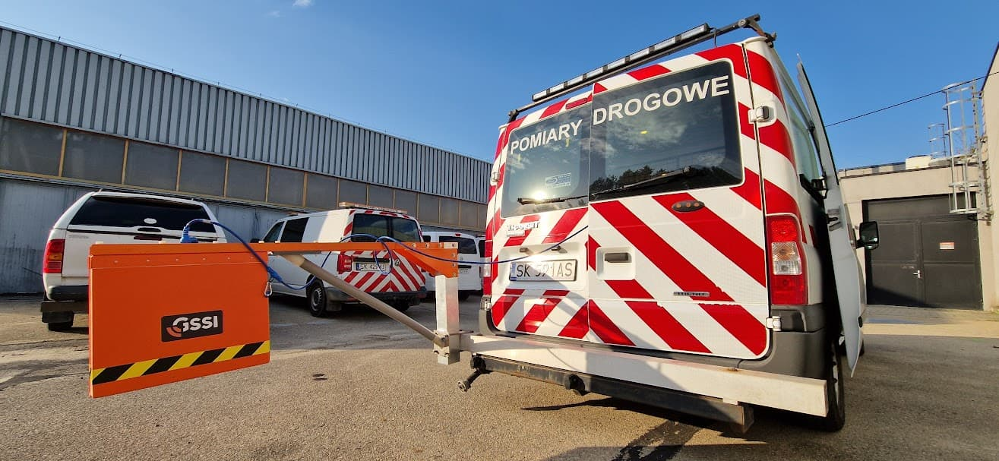
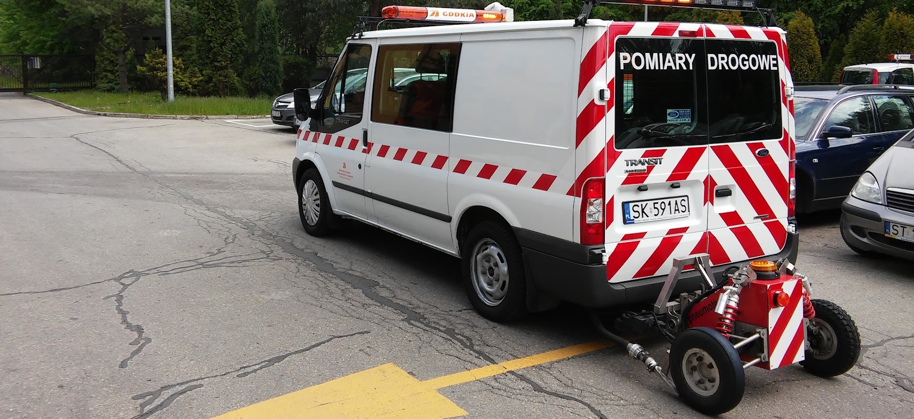
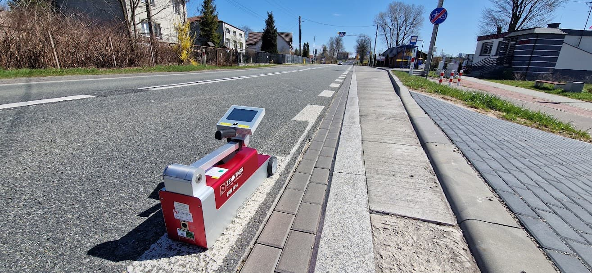
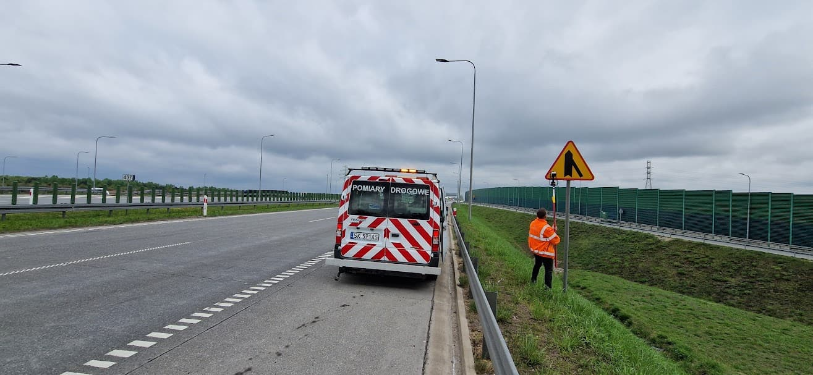
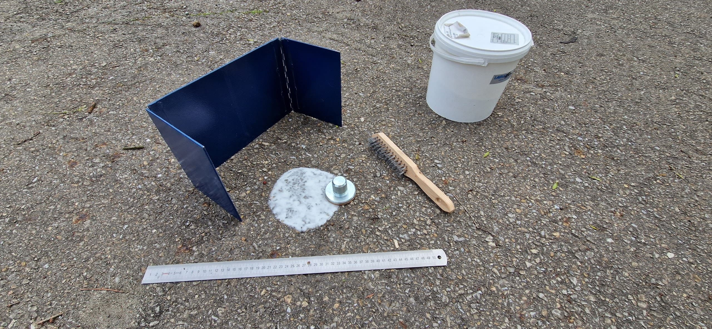

Empty header
-

Równość podłużna nawierzchni - badanie wskaźnika IRI profilografem laserowym - pomiar warstwy ścieralnej...
Równość podłużna - profilograf
Nawierzchnia
-

Równość podłużna nawierzchni - pomiar nierówności nawierzchni planografem - pomiar warstwy wiążącej i podbudowy...
Równość podłużna - planograf
Nawierzchnia
-

Równość podłużna i poprzeczna nawierzchni - pomiar nawierzchni łatą i klinem...
Równość - łata i klin
Nawierzchnia
-

Ugięcia nawierzchni - pomiar nośności nawierzchni ugięciomierzem dynamicznym FWD...
Ugięcia - aparat FWD
Nawierzchnia
-

Pomiar grubości warstw konstrukcyjnych georadarem - pomiar grubości warstw bitumicznych...
Grubość warstw - georadar
Nawierzchnia
-

Badanie właściwości przeciwpoślizgowych nawierzchni - pomiar ciągły urządzeniem SRT-Conti...
Właściwości przeciwpoślizgowe - SRT-Conti
Nawierzchnia
-

Pomiar widzialności oznakowania poziomego w dzień i odblaskowości oznakowania poziomego w nocy - pomiar retroreflektometrem parametrów RL i Qd...
Oznakowanie poziome - retroreflektometr
Oznakowanie
-

Pomiar odblaskowości oznakowania pionowego w nocy - pomiar retroreflektometrem parametru R'...
Oznakowanie pionowe - retroreflektometr
Oznakowanie
-

Pomiar grubości oznakowania grubowarstwowego - pomiar miernikiem oznakowania grubowarstwowego w stanie suchym...
Oznakowanie poziome - grubość
Oznakowanie
-
Badanie szorstkości nawierzchni - badanie szorstkości oznakowania poziomego wahadłem angielskim...
Szorstkość - wahadło angielskie
Inne
-
Badanie głębokości makrotekstury metodą objętościową...
Głębokość makrotekstury
Nawierzchnia
-
Badanie stopnia pokrycia nawierzchni oznakowaniem poziomym
Stopień pokrycia powierzchni
Oznakowanie poziome